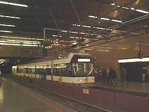

подземный трамвай в Антверпене, Бельгия
Метротрам (также: пре-метро, семи-метро, подземный трамвай) — рельсовый городской транспорт подземного-надземного типа, разновидность скоростного трамвая (легкорельсовый транспорт), реже — обычного трамвая.
У метротрама — пути частично проходят в тоннелях или на эстакадах (как правило, в городских центрах), частично — на улицах.
Метротрам совмещает преимущества метрополитена и трамвая, при этом избавлен от некоторых их недостатков.
Преимущества подземных участков метротрама — абсолютно обособленное от прочих транспортных потоков движение (по отношению к обыкновенному трамваю), меньшая стоимость подвижного состава (по отношению к метро). Недостатки — меньшая вместимость, чем в поездах метро, гораздо более высокая стоимость строительства и эксплуатации тоннелей по сравнению с выделенной полосой для движения трамвая.
Часто подземный трамвай строили в том случае, когда на строительство настоящего метро не хватало средств. Таким образом создавалась сеть тоннелей, на основе которых позднее можно было создавать полноценную систему метро (с более тяжёлым многовагонным подвижным составом). Таким образом возникло метро Брюсселя, хотя некоторые маршруты там так и не были переоборудованы под метро и на них до сих пор эксплуатируются обыкновенные городские трамваи.
В настоящее время линии подземного трамвая существуют в Антверпене, Шарлеруа и Брюсселе (Бельгия), Гааге (Нидерланды), Сан-Франциско (США, см. статью Muni Metro), Вене (Австрия, имеется 6 подземных станций трамвая, линия метро U-6 также обслуживается трамвайным составом)[1], некоторых городах Германии и других странах.
Среди стран бывшего СССР метротрам действует в России в Волгограде с 1984 (см. статью Волгоградский метротрам) и на Украине в Кривом Роге с 1986 (см. статью Криворожский метротрам).
В Ереване система, начавшая строиться как метротрам, ещё до открытия была преобразована в метрополитен.
Первоначально проектировавшиеся метротрамы Челябинска, Перми, Донецка, Одессы, Риги также были преобразованы в метрополитены, строительство которых ведётся (Челябинск, Донецк), отменено (Пермь, Одесса), начато и отменено (Рига).
В конце эпохи социализма метротрам также проектировался в Туле, Таллине, а во Львове строительство метротрама было начато, но вскоре отменено.
Ныне в Саратове, Барнауле, Вильнюсе, Таллине проектируется метротрам, в ряде других городов — просто скоростной трамвай и близкая легкорельсовая система легкое метро.